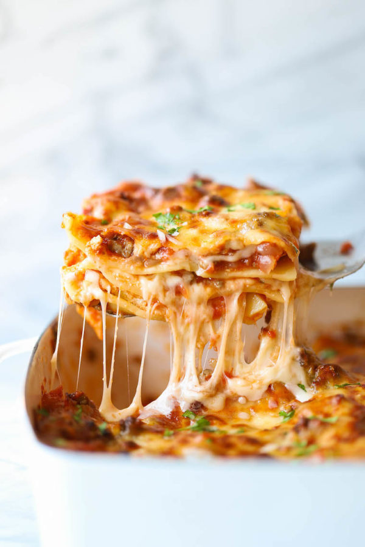

Lasagna Recipe

The perfect lasagna recipe made with parmesan ricotta cheese filling, melted mozzarella cheese, lasagna noodles, and a robust tomato meat sauce. It is the best lasagna recipe!
This is one recipe my wife begs me to make. She is obsessed with this lasagna and if she is stressed or overwhelmed with work, this is what I make him. It is the perfect comfort food meal! There's something so amazing about homemade, made-from-scratch lasagna. Whenever she orders beef lasagna at a restaurant, she ends up disappointed. This is such a warm, comforting dinner and can feed a crowd (or at least a lot of hungry kids).
This is a classic homemade lasagna recipe made with layers of gooey melted mozzarella cheese, a parmesan ricotta cheese, and a robust tomato meat sauce. It is perfect for weeknight dinners, potlucks, or to take to friends who just had a baby. This lasagna recipe can be frozen so it is perfect to made ahead of time. It also makes flavorful leftovers.
Ingredients
- 1 tablespoon olive oil
- 1 small onion
- 1 lb. lean ground beef
- 3/4 teaspoon garlic powder
- 3/4 teaspoon salt
- 32-40 ounce jar Marinara Sauce
Parmesan Ricotta Cheese Filling:
- 2 cups whole milk ricotta cheese
- 1 cup grated parmesan cheese
- 1 large egg
- 1 teaspoon dried basil
- 3/4 teaspoon salt
- 1/2 teaspoon pepper
- 12 lasagna noodles
- 4 cups mozzarella cheese
Instructions
- Preheat oven to 375 degrees. Heat olive oil in a large skillet over medium heat. Add onion and cook for about 3-4 minutes. Add ground beef and increase heat to medium-high. Cook until the meat begins to brown, about 5 minutes. Sprinkle with garlic powder, salt, and pepper.
- Lower heat to low and add marinara sauce. If you want the lasagna to be extra saucy, I suggest adding more sauce. Let the sauce continue to simmer.
Parmesan Ricotta Cheese Filling:
- In a small bowl, stir together ricotta cheese, parmesan cheese, egg, basil, salt, and pepper.
- Cook lasagna noodles according to package instructions.
- Spread the bottom of a 9 x 13 baking pan with ¼ cup of the meat sauce. Place 3 noodles in a single layers on top of the sauce. Spread each noodle with parmesan ricotta cheese filling and sprinkle with 1 cup of mozzarella cheese and meat sauce. Repeat. Finish with remaining mozzarella cheese.
- Spray a large piece of foil with non-stick cooking spray and cover the lasagna. Bake for 15 minutes and then remove the foil. Continue to bake until the cheese if bubbling, about 25 minutes longer. Cool the lasagna for 10 minutes before cutting into pieces.